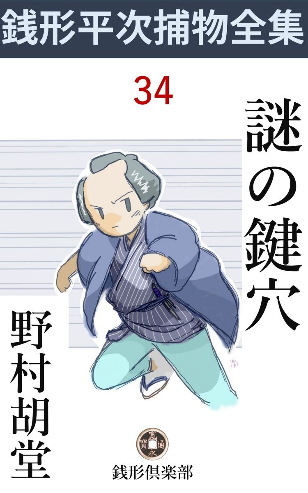

| 謎の鍵穴: 銭形平次捕物全集第34話 (銭形倶楽部) | |
| 野村胡堂 | |
| ZENIGATA CLUB (2018) | |

目次
謎の鍵穴
一
「八、目黒の兼吉親分が来ていなさるそうだ。ちょいと挨拶をして来るから、これで勘定を払って置いてくれ」
銭形の平次は、子分の八五郎に紙入れを預けて、そのまま向うの離屋 へ行ってしまいました。
目黒の栗 飯屋 、時分時で、不動様詣りの客が相当立て混んでおります。
「姐さん、勘定だよ。何？ 百二十文。酒が一本付いているぜ、それも承知か。廉 いや、こりゃ」
ガラッ八は自分の懐 見たいな顔をして、鷹 揚 に勘定をすると、若干 か心付けを置いて、さて妻 楊枝 を取上げました。
ぬるい茶が一杯。
景色を見るんだって、資 本 をかけると何となく心持が違います。
「ちょいと、伺いますが、あの銭形の親分さんは？」
優しい声、耳に近々と囁くように訊かれて、ガラッ八は振り返りました。二十 前後の大 店 の若女房といった女が、少し顔を赧らめて、尋常に小腰を屈 めるのでした。
「親分は向うへ行ってるが、何んだい、用事てえのは？」
「あの、銭形の親分さんのところの、八五郎さんと言うのはあなた で------」
「よく知っているな、八五郎は俺だ」
「確かに八五郎親分さんで------」
「八五郎親分てえほどの貫禄 じゃねえが、銭形の親分のところにいる八五郎なら、俺に違いねえ。本人が言うんだからこれほど確かなことはあるまい」
ガラッ八は古風な洒落 を言って、長 んがい顎を撫でました。
「それじゃこれを、そっと銭形の親分さんへお手渡し下さいませんか」
八五郎に握らせたのは、半紙半枚ほどの小さく畳んだ結び文。
「あッ、待ちねえ。親分と来た日には江戸一番の堅 造 だ。こんなもの取次ぐと、俺は殴り倒されるぜ」
追っかける八五郎の手をスルリと抜けて、女は店口から往来の人混みの中へ、大きな蝶々 のように身を隠してしまいました。
「冗談じゃねえ、岡っ引へ付け文する奴もねえもんだ。これだから当節の女は嫌いさ」
ガラッ八はでっかい舌鼓 を一つ、四方 を見廻しましたが、さて、その結び文を捨てる場所もありません。
「ままよ、どうとも勝手になれ」
幸い平次から預った羅紗 の紙入れ、それへポンと投り込んで、素知らぬ顔をすることに決めてしまいました。これなら結び文は完全に平次の手には入りますが、自分は知らぬ存ぜぬで通せば、余計な橋渡しをした罪だけは免 れます。もっとも、平次の女房のお静には少し済まないような気がしないではありませんが、少々位良心がチクチクしたところで、そんな事に屈託する八五郎でもなかったのでした。
「どりゃ帰ろうか」
平次は離屋から帰って来ました。
「へエ紙入れ。勘定は百二十文、あんまり安いから受取も中へ入れて置きましたよ」
「栗飯の受取なんざ、禁 呪 にもなるめえ」
庭石をトンと踏んで、傾きかけた西陽を浴びると、成程女に付文をされるだけあって平次はまだまだ若くて好い男であります。
「何をニヤニヤしているんだ。帰ろうぜ」
「へエ------、姐御がさぞ気が揉 めるだろうな」
「何だと」
「なに、こっちのことで」
二人は肩を並べて、神田へ向いました。
二
その頃ガラッ八は、向う柳原の叔母の家に泊り込んでおりました。無人で困るからと言う叔母の願いを叶えてやるつもりの八五郎。
何時までも独りじゃあるまいから、嫁を持たせる支度に、夜の物や、折々の着物も一と通り揃えさせてやりたいというのが叔母の下心だったのです。
その日ガラッ八の八五郎が平次のところで、遅い晩飯を済ませて、フラリと柳原土手を帰って来たのは戌刻 過ぎ、人通りのハタと絶えたところへ来ると、いきなり闇の中から飛出して、ドカンと突き当ったものがあります。
「気を付けろ、間抜け奴」
一人前の啖呵 を浴びせて、黙って飛んで行く男の後ろ姿を見ていると、後からもう一人。
「あッ」
と立直るところを、足をさらわれて、さすがの八五郎、真 っ逆 様 に引くり返ってしまいました。
「な、何しあがるんでえ、怨 があるなら名乗って来い。金なんざ、百も持っちゃいねえぞ」
と言ったが追付きません。相手は恐ろしく強いのばかり三人。ガラッ八も力ずくでは滅多に人に引けを取りませんが、こんなに腕っ節の強いのに揃って来られては、全くどうすることも出来なかったのです。
「------」
三人の相手は、唖 の如く黙りこくって、ガラッ八の懐から袂、髷 節 の中から、褌 の三つまで捜しました。
「くすぐってえや、野郎、何が望みで人の身体を捜 すんだ。臍 なんか摘むと噛みついてやるぞ、畜生ッ」
口だけは達者に動きますが、非凡の腕力揃いに、両手と首を押えられての作業では、ガラッ八の武力も全く用いようがなかったのです。
これが素人衆だと、大きい声を出して自身番を呼ぶとか、往来の人に駆けて来て貰う術 もあったでしょうが、十手捕縄を預かる身で、素姓も知れない者に、往来で手籠にされるのを見られたくありません。
「ない」
「人が来た」
「引揚げよう」
小さい声で囁き交した三人、ガラッ八を土手の上から突き転がすと、そのまま後をも見ずに三方へ。これは実に心得たやり口でした。ガラッ八が三人のうちどれを追っ駆けようと、暫く躊躇 するうちに一人残らず町の闇に解け込んでしまったのです。
いやそれどころではありません。土手から川へ転がされて柳の根っこに獅 噛 み付かなかったら、危うく土左衛門になるところだったのですから、三人の曲者を追っかけるどころの沙汰ではなかったのです。
立上がって懐を探ると幸い十手は無事。
「畜生ッ」
髷の刷毛 先 を直して、肩から裾の埃 を払うと、ガラッ八はもう歩き出しておりました。懐中の十手さえ無事なら、多勢に無勢、袋叩きにされても致し方がないといった達観した気持になっているのでした。
三
翌る日、ガラッ八のところへ大変な者が押し掛けて来ました。
「小母さん、八さん在らっしゃる？ あらそう、まだ寝ているなんて頼母 しいわねえ」
二十五六、この時代の相場では大年増ですが、洗い髪を無造作に束ねて、白粉っ気なしの素袷 、色の白さも、唇の紅さも艶 めきますが、それにも増して、くねくねと品 を作る骨細の身体と、露 を含 んだような、少し低い声が、この女の縹緻 以上に人を悩ませます。
「お前さんは？」
叔母は少し遠い眼を見張りました。
「お吉よ。あら、忘れなすったの。心細いわねえ、八さんの許嫁 じゃありませんか、ホ、ホ、ホ」
「まア、呆れた。私にはそんな素振りも見せないんだよ、あの子は」
叔母は少し涙含 んでさえおります。二階で大いびきを掻いて寝ているあの子の八五郎は、角の乾物屋の二番目娘でも貰ってやろうと思う、自分の計画を裏切ったばかりでなく、こんなどこの山犬とも知れない不潔 そうな女が、ノメノメと押掛けて来たのが、腹が立ってたまらなかったのです。
「小母さん、二階へ行って宜いでしょう。どうせこれから先、ズッとここにいる心算りよ、可愛がって下さるわねえ」
「------」
呆れ果てた叔母の口へ埃 を落して、お吉と名乗る女は二階へ登ってしまいました。
「あら、本当に寝ているよ、この人は」
お吉は八五郎の枕元へ、浮世絵 の遊女のように、ペタリと坐りながら、片手はもうその夜具の襟に掛って、精一杯の媚 態 を作りながらゆすぶっておりました。いや、八五郎をゆすぶったと言うよりは、八五郎の夜具へ手を置いて、自分の身体を揺って見せたと言う方が適当だったでしょう。
「ちょいと、起きて下さいな。私が来て上げたのに、寝ているって法はないワ。鼻から提灯なんか出してさ、狸ならもう少し綺麗事にするものよ、------もう辰刻 過ぎじゃないの、ちょいと八さんてば」
何と言う悩ましさ、窓から入る秋の朝陽が、暫らくカッと赤くなったほどの情景です。
「うるさいな、もう少し寝かしてくれ」
くるりと寝返りを打った八五郎。
「あら」
枕の下に入れた財布がはみ出したのを見ると、女はそっと引出して中を調べました。
「まア、ちょいと、大の男がこんな財布を持って歩くの。良い胆っ玉ね、鐚 銭 まで入れて六十四文、ホ、ホ、ホ、ホ、だから八さんは可愛いのさ」
女はそんな事を言いながら、長火鉢の側ににじり寄って、上から順々に抽斗を開けて見ました。それから、手箱、押入れと、覗いて廻るのを、この時はもうすっかり眼の覚めた八五郎は、夜具の袖から眼ばかり出して、世にも怪奇なものを見るように覗いているのでした。
「八さん、世帯道具はこれっきりかえ」
女は又元のところへ来てペタリと坐りました。例の悩ましき姿態 。
「お前は誰だい、何だって人の家へ入って来るんだ」
起き上がって、寝巻の胸をカキ合せると、長い顔を引締めて少し屹 となります。
「あら、忘れちゃいやだよ、夫婦約束までしたお吉じゃないか。よく気を落着けて御覧よ、私の顔を見忘れる筈はないじゃないか」
「な、何だと？」
「なんて怖い顔をするんだろう。だけどさ、不断お前さんは優しいから、そう屹 となったところも、飛んだ立派よ。頼母しいったらないんだよ、ウフ」
女は身を翻 すと、掛け香 を三十もブラ下げたような妖 しく、艶めかしい香気を発散させて、八五郎の膝へ存分に身を投げかけるのでした。
「わッ、何をしやがるんだ。俺は女が嫌いだよ。ことにお前のようなのは、見ただけでも、虫唾 が走る」
「何を言うのさ、この間は一緒になってくれって、お前さんの方から泣いて口 説 いたじゃないか」
「冗談も休み休み言えッ。それともお茶番の稽古なら、又日を改めてお願いしようじゃないか。馬鹿馬鹿しい」
しかしこの勝負は完全に八五郎の負けでした。どうしても一緒になると言う女を突き飛ばして、ろくに顔も洗わず、昨夜の泥の付いた袷を引掛けたまま飛出したのは、それから四半刻ばかり後のことですが、八五郎は骨の髄 まで女臭くなったような気がして、神田川へ飛込んで洗おうか------と言った、途方もない衝動にかられながら、銭形平次の家へ、一目散に駆けて行ったのでした。ガラッ八の八五郎、自慢ではないが、これが臍 の緒切って以来の女難だったのです。
四
「親分、こんなわけで、馬鹿馬鹿しくて人様に話が出来ないが、深いわけがありそうだから、このまま隠して置けません」
ガラッ八は昨夜からの一伍 一什 を打明けて、親分の平次の知恵を借りました。
「そいつは面白そうだ、手前 幾つだ」
平次は大真面目にこんな事を言います。
「三十になったばかりで」
「勘平さんと同い年か、それで女が出来ないって法はあるまい。そのお吉とか言うのも、どこかでからかったんじゃないか。よく思い出して見るが宜い」
「飛んでもねえ、親分。この八五郎が、女にからかって忘れるか忘れねえか」
「まア、そうムキになって怒るな。お前に覚えがなきゃア、これは話が面白くなりそうだ。何か大事なもの------どうせ金目のものじゃあるまいが、------人様から預るか何かして持っちゃいないか」
「大した品じゃありませんが、たった一つ心当りがあります」
ガラッ八は、目黒の栗飯屋で、大 店 の嫁といった若い美しい女から------平次親分さんへ渡すようにと結び文を頼まれたことを話しました。
「それそれ、それに決ったよ八。昨夜の柳原の暗討も、今日の押掛女房も、その結び文が欲しかったんだ、------何だって又つまらねえ遠慮をして、俺に渡さなかったんだ」
「親分の紙入れの中へソッと入れて置きましたよ」
「何、俺の紙入れに入れた。人の悪いことをしやがる」
平次は懐から紙入れを出して見ましたが、中には鼻紙と小遣が少々挾 んであるだけ、結び文などは影も形もありません。
「おや、親分のところへも押掛け女房がやって来たんじゃありませんか」
ガラッ八は少しばかり溜飲 を下げました。
「そんな馬鹿なことがあるものか。お静、お静、紙入れの中に入っていた、結び文を知らないか」
平次は次の間へ声を掛けると、
「これでしょうか」
お静は何の蟠 りもなく、小さい結び文を封も切らずに手箱の中から出して持って来ました。
「それそれ、気がきくのも好し悪しだ。紙入れの物を始末する時は、一応俺に訊いてからにしろ」
「ハイ」
お静は少し赧くなりました。淡い嫉妬 をたしなめ られたような気がしたのでしょう。それでも、結び文の封を解かなかったのは、何という仕合せだったのでしょう。内気なお静は襷 の結び目をほぐしながら、そんな事を考えているのでした。
「どれどれ、八、お前もかかり合いだ、立ち会ってくれ」
平次は馴れたもので、半紙を二枚ほど持って来て、台の上へ並べると、その上でそっと結び文を解いて行きました。髪の毛一と筋砂一粒入っていても、見のがさないようにするためだったのです。
「おや？」
思っていた通り、畳んだのは半紙半枚、鋏 の切口まで判 然 わかりますが、中には何にも書いてはいません。
いや、大きい二重◎
が一つ、肉太の の字が一つ、もう一つ小さい二重◎
が一つ、------こんな変哲もないものを描いてあるのです。
の字が一つ、もう一つ小さい二重◎
が一つ、------こんな変哲もないものを描いてあるのです。
「これは何だい、一体」
裏返して見ましたが、それっきり何にもありません。
上の二重丸は少し大きくて径一寸ほど、その下一寸二三分離して描いた二の字は几帳面な字角で、左の方だけ揃っているのも不思議ですが、上の棒が二分位、下の棒が三分位、一番下の二重丸は二の字に直ぐ続いて、その直径二分五厘ほど。何べんくり返して眺めても、この三つの外には、点一つ見つからない、最上等の手紙です。
「何でしょう親分」
「判らないよ、------だけど、これが欲しさに、立派な御用聞を手 籠 にしたり、廃 り者らしくない年増が、押掛け嫁に来るところを見ると、余程の品には違いあるまい。こうしようじゃないか、八」
平次はお静を紙屋に走らせて、同じ程度の上質の半紙を買わせ、その一枚を半分に截
ると、八五郎が托
された結び文と同じ絵を三つ、------念入りに真似たくせに、わざと少しずつ寸法を変えたのを描きました。上の二重丸は少し小さく、直径八分位に、丸と の字は二寸ばかり離して、
の字の足はそれぞれ五厘ほど長く描き、最後の二重丸はグッと大きく、径三分五厘ほどに書き上げたのです。
の字は二寸ばかり離して、
の字の足はそれぞれ五厘ほど長く描き、最後の二重丸はグッと大きく、径三分五厘ほどに書き上げたのです。
「八、これを持って帰れ、袷 の袂 へ入れて行くんだ。そのお吉と言う女がまだいるんなら、きっと探し出して贋物と知らずに持って帰るに違いない。そこを跟けて、巣を突き止めるんだ。これは余程大仕事かも知れないぜ、気を付けてやるが宜い」
八五郎は平次に言われた通り運びました。帰って来たのは夕景、お吉と言う女は、すっかり女房気取りで、叔母を手伝って晩飯の支度などをしております。
「おや、八さん、お帰んなさい。大層な御機嫌ね」
「何を言やがる」
八五郎はツイ痛烈 に浴びせかけましたが、思い返して、着ていた袷を脱ぎ捨てると、少し薄寒そうな浴衣を引かけて、手拭いを片手にプイと飛出しました。
「あら、銭湯へ行くのかい、一本つけて待ってますよ」
追っ駆けるようにお吉の声。ガラッ八は舌鼓 を一つ、大急ぎで、路地を出ると、天水桶の蔭へ蝙 蝠 のようにピタリと身を隠しました。
お吉は八五郎の脱ぎ捨てた袷の袂から、贋物の結び文を捜し出して、続いてその後から飛出した事は言うまでもありません。
「へン、銭形の親分の見透しさ。お吉の阿 魔 、すっかり喜んで後ろを振り向いても見ねえ。もっとも、振り向かれちゃ大変だ」
八五郎はブラサゲた手拭を早速頬 被 りにしました。ガラッ八相応の変装 術 です。
女はそんな事も知らぬ様子で、賑やかなところを通るように、------白金へ辿り着いた時はもう亥刻 （十時）近い頃でしたでしょう。
五
「おや？」
六軒茶屋町から永峰 町、行人 坂 を越して、ガラッ八は女の姿を見失ってしまったのです。
太鼓橋を渡って、中目黒の方へ、田圃 道を当もなく行くと、昨夜と違って良いお月様に照らされて、その辺の風物までが妙に感傷をそそります。
どこやらで------女の悲鳴。
駆け出したガラッ八は、ハタと躓 きました。
往来に崩折れているのは紛れもないお吉、抱き起すと、------あッ血、胸を一とえぐり、一とたまりもなく死んだ様子です。
早くも結び文に気の付いたガラッ八は、帯の間、袖、襟------など、凡そ女が物を隠しそうなところを残るくまなく捜しましたが、下手人に奪られたと見えて、その辺には影も形も見えません。
それからの騒ぎはどんなに大 袈裟 であったにしても、この物語の筋とは関係のないことです。とにかく自身番まで死骸を運ばせて、町方役人立会で検屍 を済ませたのは夜中過ぎ、困ったことに、女の身元がどうしても解りません。
「銭形の親分ところの八兄哥 じゃないか、飛んだ事に掛りあって、さぞ迷惑だったろう」
遅れて飛んで来た目黒の兼吉------これは老巧な良い御用聞で、平次に楯 を突いたり、八五郎をからかったりするような人柄ではありません。
「目黒の親分、これには深いわけがありそうですぜ。とにかく女の身元を洗 って見て下さい」
八五郎も外に工夫はありません。
兼吉の子分は八方に飛びました。
女はやはりお吉と言うのが本名で、中目黒切っての物持ち、洒 落 に両替もやると言った、近江屋七兵衛の番頭佐太郎が、人目を憚 って、思い切り遠方に囲っている妾だったのです。
近江屋の番頭佐太郎は、翌る日の昼前に縛られました。番所で引っ叩かないばかりに責めて見ましたが、知らぬ存ぜぬの一点張で、筋の通ったことは一つも白状しません。
丁度その頃。
「親分、大変、近江屋の主人が死にましたぜ」
兼吉の子分が、番所へ飛込んで来たのです。
「何？ 頓死 か、怪我か」
「それが怪しいんで------、昼飯の後で、大変な苦しみようだったというし、身体が斑 になって、舌も眼も引釣ったって言うから、ことによればやられ たのかも知れません」
「そいつは大変だ。八兄哥行って見るかい」
兼吉と八五郎は、宙を飛びました。岩屋の弁天前を通って、竜泉寺の門前、この辺は昔の方が繁昌したところで、近江屋も片手間ながら場所柄だけの商売はあったわけです。
店の内外はゴッタ返す騒ぎ、それをかきわけて入ると、奥は思いの外森 として、主人七兵衛の死体には、若い女房のお峯と奉公人の釜吉が附いているだけ------。
「おや」
もう一つ驚いたことは、七兵衛と言う年寄り臭い名を持って居るのに、死んだ主人というのは、精々二十五六、一寸好い男ですが、死体は二た眼とは見られない虐 たらしさです。
「あッ、お前さんは」
八五郎はもう一つ度胆 を抜かれました。死体の側にいる女房のお峯というのは、ツイ二日前に、同じ目黒の栗飯屋で、親分の平次へ------と言って、謎の結び文を渡した、あの美しい女だったのです。
「------」
お峯の訴える眼付き------邪念 などは微塵もありそうのない、大きい悲しみと困惑とに悩まされた眼付き------を見ると、八五郎もそれを言い出す気にもなりません。
「これは、親分様方、------御苦労様で御座います」
下男とも、小使とも、庭 掃 きとも、一人で兼ねている釜吉は、五十男らしい実体さで挨拶しました。笑うと恵 比 須 様になる男ですが、さすが主人の死体を前にして、沈み切って愛想っ気もありません。
先代七兵衛は十年ばかり前にこの土地へ来て、伜 を育てて嫁を貰いましたが、本当の他国者で、嫁の里の外には、身寄りも友達もありません。
六
二つの死骸を繞 って、事件は恐ろしく複雑になりました。番頭の佐太郎は、商売上手な四十男で、人など害 めそうもない人間ですが、お吉が殺された時分丁度店にいなかったのと、着物に血潮がベットリ附いていたので、疑いを言い解く術もなかったのです。
それに、近頃お吉の貪欲 な追及を持て余して、切れたがっていると言った噂も、佐太郎には暗い影でした。全く佐太郎にとって、この二三年来のお吉は、重荷だったに相違ありません。このため、あっちこっちに借金を作っていることなども、調べが進むに従って、追々に判って来たことです。
主人の七兵衛は、本道 （内科医）が立会って検屍の末、毒を盛られたと判りました。その毒は、昼頃食べた生 菓子の餡 の中に入っていたのではあるまいかと------言いますが、確かなことは判りません。七兵衛は茶が好きだったのと、朝から昼までの食物で、一人で食べたのは、その生菓子の外にはなかったというところまで判ったのでした。
お茶の相手をしたのは女房のお峯ですが、それは金 米 糖 か何かを一粒口に入れただけで、生菓子は食べなかったと自分で言っております。七兵衛の死んだのは、佐太郎が番所へ引かれて一刻も経ってからですから、疑いは当然嫁のお峯一人に掛って来なければなりません。
兼吉がお峯も縛ると言い出したのは、決して無理なことではなかったのでした。
「お願いですから、銭形の親分さんをお呼びして下さい」
自分の身辺が危うくなると、お峯はそっと八五郎にささやきました。
「それじゃ訊くが、あの結び文は何だえ、それを言って貰わなきゃア、御新造を庇 いようはない」
八五郎の言葉は少し厳 しく聞こえたのでしょう。
「私には何にも判りません、------主 人 が亡くなる二三日前から、どうも危ない、このままでいるとどんな事になるか解らないから、これを預ってくれ、と私へ渡したのです。訊き返しても、何も言いませんでした」
お峯の言葉は意外でした。が、綺麗な小さい顔、わななく唇、一生懸命な瞳を見ていると、どんな不自然なことでも、ガラッ八は信じてやりたいような気になります。
「それから」
「あの日銭形の親分さんが不動様に参詣にいらしったと聴いて、私は一人で決めて飛んで行きました。主 人 はもうろく な口もきかないほど心配していましたし、私はあの結び文を持っているのが怖くてならなかったのです」
「------」
「八五郎さんにお願いして、銭形の親分にお頼みしたと話すと、主 人 は、------そうか、仕方があるまい、あの符牒 だけでは、見る人が見なければ判る道理がないから、------と申しておりました」
お峯の話はそれだけです。
間もなく兼吉がやって来て、縄は打ちませんが、お峯を番所まで伴れて行ってしまいました。
が、町内の医者や、目黒から白金 、麻布一円の生薬屋を調べさした子分が帰ってくると、兼吉のした事はすっかり引くり返されてしまいました。毒を手に入れようとして、医者や生薬屋に、いろいろ手を尽したのは、お峯ではなくて、却って佐太郎だったことが判ったのです。
七
何日 か無駄に過ぎました。
佐太郎はどんなに責めても、お吉殺しを白状せず、お峯の方も、夫殺しの嫌疑が段々薄くなるばかりです。
佐太郎の着物に着いていた血というのは、人を刺した時の返り血でなくて、刃物を拭った血の跡だと判りました。これは八五郎が指 摘 したので、『銭形平次親分に注意されて来た』とはっきり断っております。成程そう言えば血潮は刃形に附いていて、自分で自分の着物で匕首 を拭かなければ、こんな型が付く道理はありません。もっとも、お吉殺しの時の不 在 証 明 は持っていませんが、それには深い仔細のあることでしょう。
お峯に懸 った夫殺しの疑いも、同じように段々薄れて行きます。夫婦の仲が雇人達が羨 むほど良く、それに、夫でも殺そうと言う悪心があるなら、江戸一番の捕物の名人に、謎のような結び文を預けていらざる注意を喚び起す筈もありません。
もう一つ、生菓子へ入れた毒も、その時お峯が入れたとは限らないわけで、一刻も二刻も前に入れて置いても、七兵衛が喰うに決った菓子だったのです。
二人は許されて帰って来ましたが、そうかと言って、他に疑いをかける程の人があるわけではありません。
釜吉は実直一点張りの男、菓子もその日の朝七兵衛に頼まれて自分が赤坂から買って来たのですから、自分の手で毒を仕込むような馬鹿なことはする筈もなく、第一その菓子を誰が食うのか、よく知っている道理がなかったのでした。
丁稚 の長六、下女のお咲、仲働きのお春、どれも一期半期の奉公人で、お吉や七兵衛を殺すほどの理由を持つようなのはありません。
「銭形の、------気の毒だが、兄哥も満更掛り合いがないわけでもあるまい。少し乗出して知恵を貸しちゃ貰えまいか」
兼吉がわざわざ神田までやって来たのは、それから七日も経った後でした。
「俺が出しゃ張っちゃ、兄哥に済まない。こうしよう、たった一つ心当りを言って置くが、兄哥の手で調べて貰えまいか」
平次は遠慮深くこんなことを言います。
「どんな事だい、銭形の兄哥、こうなりゃ、どんな事でもやって見るが」
四十男の兼吉は、この稼業の者に似合わぬ、謙 虚 な、人柄の男だったのです。
「近頃、あの家の者か、出入りの者で、鍵を拵 えさせた者はないだろうか、山ノ手一円の鍛 冶 屋 鋳 掛 屋 を、ごく内証で調べて貰いたいんだが------」
「そんな事ならわけはない」
兼吉は大喜びで飛出しました。平次の註文は見当も付きませんが、何となく自信あり気で、これがむつかしい事件をほぐす端 緒 になりそうな気がしたのです。
が、それも全く無駄な努力でした。山ノ手の鍛冶屋鋳掛屋に、この十日ばかりの間に鍵を頼んだのは三十人もありますが、困ったことに、その中には近江屋の者は言うまでもなく、近江屋出入りの者も一人もなかったのです。
「どうだろう、銭形の」
二度目にがっかりして兼吉が来た時、平次は日頃にもなく悄気 て、
「成程これは悪かった。あれほどの曲者が、自分で鍵を註文に行く筈はない」
こんな事を言っております。
八
到頭平次は乗出しました。
目黒へ行く前、南の奉行所へ一寸顔を出して、書き役の遠藤佐仲 に逢い、
「丁度十年か十一年前に、何か飛んでもない物が盗まれて、それっきり、その品も現われず、盗人も知れないと云うような事は御座いませんか」
こんな事を訊ねます。
「左様、十年か十一年前というと古いことだが、品物も盗人も現れないのは、大抵書き残してある筈だ、待ってくれ」
帳面をパラパラとめくって行った遠藤佐仲は、しばらく経って、会心の笑みを浮べました。
「ありましたか、旦那」
「あったよ平次、------しかも三つだ」（編注）
「へエ------」
「一つは、遠州 浜松 で------」
「そんなのは要りません、江戸の近在のだけで沢山で」
「板橋の東景 庵 の薬師 如来 像 が盗まれた。これは慶運作の御丈け四尺五寸という大した仏像だ。厨 子 は金銀を鏤 め、仏体には、玉がはめ込んである、が十一年前の春盗まれて、未だに行方が知れない」
「それから」
「金座の後藤が、勘定奉行へ送って極 印 を打って貰う、吹き立ての小判が六千両、常盤 橋 外で、車ごと奪られた、その時人足が二人、役人が一人斬られたが、これもまた、品も下手人も、現われない」
「その小判には極印が打ってあるでしょうか」
「捺してない筈だ」
「通用出来ませんね」
「十年も経って、世間で忘れているから、極印位はなくとも、今なら少々は通用するかも知れないよ、もっとも極印の贋 を作れば、それっきりだ。お上でも知らないうちに、通用しているかも知れない」
遠藤佐仲まことに心得たことを言います。
「それだッ」
「あ、驚いた、何がそれだ」
「いえ、こっちの事で、どうも御手数を掛けました。有難う存じます」
平次はその足で目黒へ------。
「目黒の兄哥 、大方見当が付いたぞ。今度の曲者は一と筋縄では行かないわけがある。何十人でも宜い、大急ぎで掻 き集められるだけ人数を集めて貰いたい------」
兼吉を呼出して、そっと囁きます。
「宜いとも」
顔の良い兼吉は、即座に子分や諜者 を呼びました。一刻も経たないうちに、近江屋の庭に集まった人数はざっと三十人。
「有難い、これだけありゃどんな狸でも逃しっこはねえ、型ばかりの家探しをさせて、日が暮れたら一人残らず帰る振りをするんだ。もっともそっと引返して、塀の外から見張っていて貰いたいんだ」
「宜いとも」
二人は打合せると、
「サア、これから家探しだ。天井裏から、床下まで、目の届かない隈 があっちゃならねえ。押入れも、戸棚も、奉公人の荷物も、皆んな探すんだ。目当ては、お吉を殺した匕首 と、主人を殺した毒薬だ、------他の物には目をかけるに及ばねえ」
平次が号令すると、三十人ばかりの人数、一斉に動き出して、およそ気の長い家探しを始めました。
それが半日、日が暮れて、灯がなくては何にも見えなくなると、平次と兼吉は、疲 れ果てた人数を庭へ集めて、
「どうも御苦労、これだけ探して見当らなきゃア、この家に隠して置かなかったんだろう。一人残らず帰って休んでくれ」
兼吉に言われて、文句を言うわけにも行かず、銘々脹 れ返って店から、裏口から、暗くなった下目黒の往来へ出て行きました。
九
「これで切上げだ。下手人は到頭解らないが、いずれ閻 魔 様が見付けて下さるだろう。最後の思い出に、二人で見て廻るとしようか、目黒の兄哥」
平次はおっくうそうに立上がりました。
「無駄だろうよ、銭形の」
「無駄は解っているが念のためだ、------番頭さん、御新造さん、案内して貰いましょうか、釜吉も一緒に来てくれ、疑いのかからなかったのはお前ばかりだ、人徳があるんだね」
「御冗談を、親分」
釜吉は佐太郎とお峯の後に従いました。
平次は兼吉を先に立てて、店から始まって、納戸へ、居間へ、仏間へ、お勝手へ、雇人の部屋へ------と鍵のあるもの、錠前のあるものを一つ一つ覗いて行きます。
時々は自分の袂から二三十束にした鍵を出して、いろいろ廻したり開けたり。
到頭手燭 と提灯を点 けさせて、釜吉と八五郎に前後から照らさせながら、庭の方まで出かけて行きました。
庭の奥の林の中には、近所の百姓地で荒れ放題になっていたと言う、稲荷 様の祠 を移して、元のままながら小綺麗に祀ってあります。赤い鳥居が十基 ばかり、その奥は一間四方ほどの堂があって、格子の前には、元大きな拝殿の前にあったという、幅三尺に長さ六尺、深さ三尺五寸もあろうと言う法外に大きな賽 銭 箱 があります。
「これは大層欲張った賽銭箱だネ」
平次は笑いながら覗いて見ました。
欅 の厚板で組んだ、恐ろしく岩乗なもので、大一番の海老錠 を卸してありますが、覗いて見るとよく底が見えて、穴のあいた小銭が五六枚あるだけ、何の変哲もありません。
「------」
平次は小首を傾けましたが、その辺にあった細い棒を持って来て、賽銭箱の内と外の深さを測り、それから、自分の鍵束の中の大きい鍵を海老錠に持って行くと、錆 び付いて少しきしみますが、それでも手に従って廻って、錠はわけもなく外れます。格子になった蓋を取って、箱を横にしようとしましたが、これが恐ろしく重くて、一人の力ではどうしても動きません。
平次は箱の中に手を入れると、バラ銭をかき集めました。
「あッ」
そのバラ銭の一枚は糊で付けたもので、剝すとその下から、鍵穴が一つ出て来たのです。
平次は予期したことのように、その穴に同じ鍵を入れて廻すと、底板は手に従ってボカリと取れ、その下から、目の覚めるような山吹色------。小判で六千両の大金が、提灯と手燭の灯を受けて燦 然 として眼を射たのです。
「これは何だ」
驚く兼吉。八五郎も佐太郎もお峯も、釜吉も、暫らくは息を吐くことさえ忘れたようでした。
「十年前、稲妻組 と言った三人の泥棒が、常盤 橋 で金座の後藤から勘定奉行へ送り届ける六千両の小判を盗ったが、極印が打ってないので費うわけには行かなかった、------それにしても、賽銭箱へ金を匿 すという悪智恵には驚いたよ。賽銭箱は銭を入れる道具だ。覗いて見るとバラ銭が少し底の方にある。竈 や仏壇に金を隠すなら誰でも気が付くが、賽銭箱までは思いも寄らない」
平次は一人で感心しております。
「その六千両を奪った泥棒は誰だ」
たまり兼ねて兼吉は口を挾みました。
「近江屋の先代七兵衛がその首領 だ。七兵衛が死ぬと、二代目の七兵衛は賽銭箱の鍵を預ったが、あと二人の仲間が脅 かすので、恐ろしくてかなわないので、そっと、鍵を捨てて、鍵の寸法だけ取って御新造に渡して置いた。御新造が八五郎に渡したのがその鍵の寸法だった」
「------」
「大きい二重丸は鍵の上の輪だ、これはあってもなくても宜い。次の の字は、鍵の一番大事な二本の足だ。左が揃っているのはそのためだ。下の二重丸は、鍵の軸
の太さだ。俺も、これが鍵の寸法と解るまでには一日かかったよ」
の字は、鍵の一番大事な二本の足だ。左が揃っているのはそのためだ。下の二重丸は、鍵の軸
の太さだ。俺も、これが鍵の寸法と解るまでには一日かかったよ」
「その鍵は親分」
とガラッ八は平次の持っている鍵を指します。
「近所の鋳掛屋 に、寸法書通りのものを作らせたのだよ」
「出鱈目な、寸法を書いてお吉にやったのは？」
「曲者に一杯喰わせるためさ。曲者はお吉を使ってお前から寸法書を取らせたが、お吉は昔の七兵衛の仲間の泥棒の娘だったので、もう一人、生き残った泥棒が殺してしまったのさ。お吉があんまりいろいろの事を知っていたのと浮気ッぽくて気が許されなかったのだ」
「------」
平次の明察に、皆んな固唾 を呑むばかりです。
「曲者はお吉を殺した上、二代目の七兵衛まで殺した。生菓子へ入れた毒は、その辺の藪に沢山ある×××××だ。あれは味が解らない上、鴆 毒 よりも利く」（編注）
「誰だい、その曲者は」
兼吉は我慢のならぬ声を出します。
「証拠から先に見せてやろう。先刻の家 捜 しで、見付かっては大変と思ったのだろう、曲者は、俺が書いた偽寸法で拵えた鍵を自分の身体に持っている筈だ」
「野郎ッ、鍵を捨てたなッ」
八五郎は怒鳴って、猛犬のように誰かへ飛付きました。恐ろしい必死の格闘が、ほんの暫らく続くと見るや、曲 者 はガラッ八を虫のようにハネ飛ばして、高い塀へ飛付いたのです。
「馬鹿ッ、外には三十人もいる、神妙にせい」
平次が手から投げた銭は、塀の上の曲者の頬を打つと、曲者の身体はそのまま下へ。
不意を喰らって、よろめくところへ、塀の外に伏せた人数は、折重なって縛り上げました。
曲者は、下男の釜吉。昔の稲妻組 の仲間であった。先代七兵衛のところへ潜り込んで時節を待つうちに、お吉の父親も七兵衛も死んで、ツイ六千両を一人占めにしようという気になったのでした。
番頭の佐太郎は何にも知らず。お吉は、佐太郎のお人好しに喰い下がって、釜吉と張合って、近江屋の内情を知ろうとしていたのです。
佐太郎はお吉が殺された時刻に、どこにいたか、言い開きの出来なかったのは、お峯に庭の闇に誘 い出されて、何ということもない、若い女の神経を脅かす『恐怖 』を聴かされていたのですが、世の誤解を惧 れて、それを言わなかったまでのことでした。
（編注）
底本では「しかも二つだ」となっていますが、文脈の整合と、嶋中文庫版「銭形平次捕物控（三）」の記述を参考として、「しかも三つだ」に改めました。
底本の「×××××だ」と、伏字になっている部分は、嶋中文庫版「銭形平次捕物控（三）」では「トリカブトだ」となっていますが、底本のままとしました。
作品中には、身体の障害や人権にかかわる、差別的な語句や表現が見られますが、本書が成立した当時の時代背景等が現代とは異なる古典的な文学作品でもあり、著者が故人でもありますので、底本のままとしました。ご理解、ご諒承のほどをお願い申し上げます。
著者---野村胡堂
挿絵---萩 柚月 © 2017
初出---「オール讀物」昭和九年十一月号 文藝春秋社
底本---「錢形平次捕物全集」第二巻 河出書房 昭和三十一年五月三十一日初版
編集・発行 銭形倶楽部